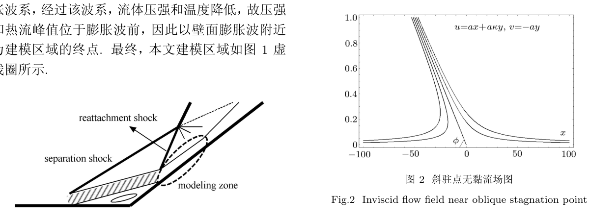
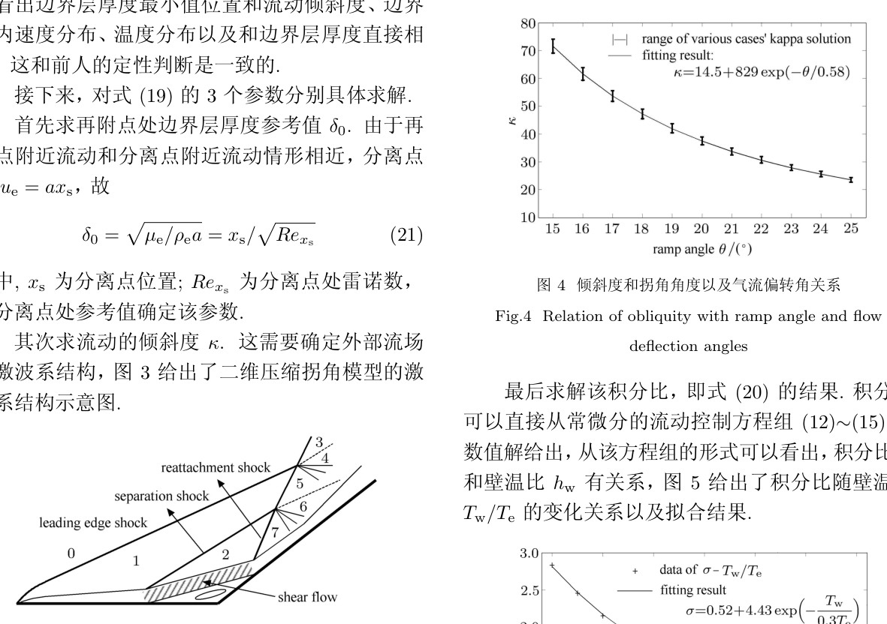
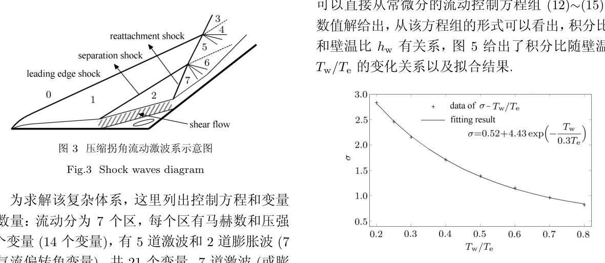
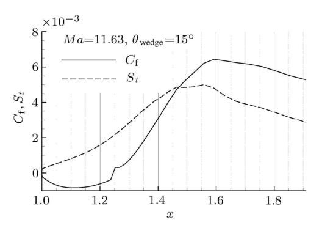

01中文摘要
本文建立高超声速压缩拐角再附点附近的模型理论，以揭示峰值热流的产生机理并可靠预测其位置。作者分析再附点附近流动特征，提出用可压缩斜驻点流动模型近似该局部流动，并给出新的自相似求解方案。求解发现边界层厚度在再附点后存在极小值，由此解释峰值热流的产生，并得到再附点与峰值热流点之间距离的半解析半数值估算方法。文章用数值结果验证该模型，并讨论来流马赫数、雷诺数和拐角角对峰值热流位置的影响。
原始摘要（英文/原文）
旨在通过建立高超声速压缩拐角流动的再附点附近的模型理论来揭示峰值热流的产生机理以及如何可靠预测其位置.首先,分析再附点附近流动特征,提出了基于可压缩斜驻点流动模型来近似该处的局部流动.其次,近似求解了该流动模型,发现边界层厚度存在极小值的特征,从而揭示了再附点后峰值热流的产生机理,并由此得到了再附点和峰值热流点间距离的半解析半数值估算方法.最后,对此结果作了数值验证,并做了讨论.
02阅读说明
期刊论文（理论建模+数值验证），《力学学报》2012年44卷5期，全文7页；图1-6、表1-3的图注与裁剪图齐全，表格数值清晰；正文公式经原PDF第2-5页核对，式(12)(17)(20)存在扫描转写歧义（见derivation.limits）。信息完整度较高。 文章类型：期刊
03一句话核心与三句话摘要
以可压缩斜驻点模型揭示再附点后边界层厚度极小值，给出峰值热流位置Lpk=σκδ0的半解析预测。
- 已有峰值热流比拟式依赖“再附点到峰值热流点距离”，但该距离缺少可靠估算方法，峰值热流位置难以预测（第1页）。 原文明确
- 作者在再附点邻域建立可压缩斜驻点局部模型，推导并数值求解边界层方程，发现边界层厚度存在极小值，得到 Lpk=σκδ0；4组算例预测0.25/0.20/0.27/0.17，与CFD及Marini结果接近（第5页表2）。 AI概括
- 该模型从理论上解释了再附后峰值热流的产生机理，并借压强-热流比拟给出峰值大小估算，可作为检验CFD气动热结果的理论判据；结论限于层流、完全气体、二维。 AI概括
04核心内容清单
| 要点 | 类型 | 重要性 | 原文依据 | 属性 |
|---|---|---|---|---|
| 建模区限定为再附点至壁面膨胀波前，用斜驻点流动近似再附点邻域 | 建模思路 | A | 第2页 §1.1、图1 | 原文明确 |
| 外流取 u=ax+aκy、v=-ay，倾斜度 κ=2/tanφ，涡量 ζ=aκ 与倾斜度成正比 | 模型 | A | 第2页 式(1)(2)、图2 | 原文明确 |
| 采用全层流、量热完全气体空气、二维压缩拐角假设 | 假设 | B | 第2页 §1.1 | 原文明确 |
| 量级分析证明再附点邻域能量方程中黏性耗散项可忽略 | 推导 | A | 第3页 式(5)-(7) | 原文明确 |
| 由Howarth-Dorodnitsyn变换和流函数分解得到 f、g、h 的常微分方程组 | 推导 | A | 第3页 式(10)-(15) | 原文明确 |
| 外缘涡量非零，须用涡量排移厚度δ*代替速度型厚度来表征边界层厚度 | 定义 | A | 第3页 式(16)(17) | 原文明确 |
| δ* 取极小值得 Lpk=σκδ0，且 Lpk∝ζ，非对称性导致峰值点与再附点不重合 | 核心结论 | A | 第4-5页 式(19)(22) | 原文明确 |
| 再附点边界层厚度参考值取 δ0=xs/√Re_xs | 参数 | B | 第4页 式(21) | 原文明确 |
| M=10时给出 κ 随拐角角度的拟合式，σ 随壁温比的拟合式 | 参数 | B | 第4页 图4、图5 | 原文明确 |
| 4组算例的峰值位置预测与CFD及Marini结果最大偏差约0.01（无量纲） | 验证 | A | 第5页 表1、表2 | 原文明确 |
| 峰值热流大小经比拟式(23)估算，与CFD结果接近 | 验证 | B | 第6页 表3 | 原文明确 |
| 层流假设是主要限制，湍流情形需修正，模型可向其他再附加热问题推广 | 局限/展望 | C | 第6页 §3、§4 | 原文明确 |
05引言：研究问题与领域缺口
高超声速分离-再附流动在机身-翼-舵连接、进气道拐角处产生严重气动加热，峰值热流大小与位置是热防护系统的关键设计参数。已有研究多停留在流场描述（分离区长度、压强平台），气动热研究以CFD为主且不确定度大；工程上常用的峰值热流比拟式含有“再附点到峰值热流点距离”，但该参数迄今没有可靠估算方法。作者由此提出局部建模思路：只对再附点后壁面附近区域建模，以可压缩斜驻点流动近似，目标是预测峰值热流位置并揭示其机理（第1页）。
06流动条件与几何构型
| 项目 | 数值/描述 | 依据 | 备注 |
|---|---|---|---|
| 几何构型 | 二维压缩拐角（平板+斜坡），θ为拐角角度；建模区起于再附点、止于壁面膨胀波前 | 第2页 §1.1、图1 | |
| 流动状态 | 全层流；量热完全气体空气；二维 | 第2页 §1.1 | |
| 壁面边界条件 | 无滑移、无穿透，T=Tw | 第3页 式(8) | |
| 外缘匹配条件 | u~ax+aκy，v=-ay，T=Te | 第3页 式(9) | |
| 算例A | M∞=11.63；θ=15°；Tw=297 K；T∞=67.05 K；Re∞=242 320 | 第5页 表1 | |
| 算例B | M∞=11.63；θ=15°；Tw=594 K；T∞=67.05 K；Re∞=242 320 | 第5页 表1 | |
| 算例C | M∞=11.63；θ=15°；Tw=594 K；T∞=67.05 K；Re∞=121 160 | 第5页 表1 | |
| 算例D | M∞=14.10；θ=24°；Tw=297 K；T∞=88.88 K；Re∞=103 790 | 第5页 表1 | |
| Re参考长度 | 文中未提及（仅给出Re∞数值） | 第5页 表1 | |
| 算例来源 | 典型高超声速压缩拐角算例[16]（Marini） | 第5页 §2.2 | |
| 模型常数示例 | C=1、hw=0.2（用于给出δ*分布示例） | 第3页 §2.1 |
07核心现象与关键参数
| 参数 | 定义 | 数值 | 关系/说明 | 依据 |
|---|---|---|---|---|
| κ | 流动倾斜度，与外流涡量成正比 | κ=2/tan(φ)；M=10拟合 κ=14.5+8.29exp(-θ/0.58) | ζ=aκ | 第2页式(2)、第4页图4 |
| φ | 过原点的流线与壁面夹角 | 文中未给出各算例具体值 | κ=2/tanφ | 第2页 §1.1 |
| a | 离壁面单位长度的法向速度尺度 | 常数，文中未给数值 | u=ax+aκy，v=-ay | 第2页 式(1) |
| δ0 | 再附点处边界层厚度参考值 | δ0=xs/√Re_xs | √(μe/(ρe a)) | 第4页 式(21) |
| σ | 积分比（两个无量纲积分之比） | σ=0.52+4.43exp(-Tw/(0.37Te)) | Lpk=σκδ0 | 第4页 式(20)、图5 |
| Lpk | 边界层厚度最小值（峰值热流点）到再附点的距离 | 预测0.25/0.20/0.27/0.17（A/B/C/D，无量纲） | Lpk=σκδ0 | 第4-5页 式(19)、表2 |
| hw | 壁温比 | hw=Tw/Te，各算例Te文中未提及 | σ=f(hw) | 第3页 式(15)、第4页 图5 |
| St_pk/St_ref | 峰值热流斯坦顿数与参考值之比 | 由式(23)估算 | (p_pk/p_ref)^(1/2)(L_pk/x_ref)^(1/2) | 第5页 式(23) |
| C | 密度黏性比 | ρμ/(ρeμe)，示例取C=1 | 出现在式(12)-(14) | 第3页 式(12)-(15) |
08方法与数据
①将建模区限定为再附点至壁面膨胀波前（图1）；②以斜驻点外流 u=ax+aκy、v=-ay 近似，κ=2/tanφ（式1-2）；③由N-S方程简化得边界层动量、能量方程（式3-4），用量级分析论证黏性耗散可忽略（式5-7）；④采用Howarth-Dorodnitsyn变换与流函数分解（式10-11），化为常微分方程组（式12-15）并数值求解；⑤以涡量排移厚度δ*的极小值等价边界层厚度极小值（式16-18），得 Lpk=σκδ0（式19）；⑥δ0=xs/√Re_xs（式21），κ由M=10的七区激波系计算拟合（图4），σ由ODE数值解拟合（图5）；⑦用N-S程序（文献[13]）对4组算例验证（表1-3、图6），并用比拟式（23）估算峰值大小。
| 项目 | 内容 | 依据 | 备注 |
|---|---|---|---|
| 理论模型 | 可压缩斜驻点流动+近壁边界层，局部建模 | 第2页 §1.1-1.2 | |
| 控制方程 | 边界层动量方程(3)与含耗散的能量方程(4)，量级分析后能量方程取(7) | 第2-3页 | |
| 方程变换 | Howarth-Dorodnitsyn变换(10)+流函数分解(11)→ODE(12)-(15) | 第3页 | |
| ODE求解 | 数值求解耦合方程组；原文未说明具体离散格式与收敛准则 | 第3页 §1.2 | |
| 激波系分析 | 7区、21个变量、19个控制方程，系统欠定，需预设分离与再附激波的气流偏转角两个条件 | 第4页 §2.1、图3 | |
| 倾斜度确定 | 以M=10为例计算并拟合κ(θ)，认为κ主要由来流马赫数和拐角角度决定 | 第4页 §2.1、图4 | |
| CFD验证 | N-S方程程序，详见文献[13]；网格、格式、y+等文中未提及 | 第5页 §2.2 | |
| 算例设置 | 4组：A/B/C为M=11.63、θ=15°，D为M=14.10、θ=24° | 第5页 表1 | |
| 峰值大小估算 | 采用前人峰值压强-热流比拟关系式[7-8]（式23） | 第5-6页 |
09核心推导与公式
只对再附点后壁面附近区域建模：用可压缩斜驻点外流提供边界层外缘条件，将边界层厚度极小值问题转化为涡量排移厚度δ*的极小值问题，从而得到峰值热流点相对再附点的距离。
关键假设
- 二维、全层流、量热完全气体空气
- 建模区仅覆盖再附点至壁面膨胀波前，相邻区域作为已知边界条件
- 边界层内法向压力梯度为零，dp/dx由外流给定
- 温度剖面沿流向相似，只考虑法向分布
- 能量方程中黏性耗散可忽略（由量级分析论证）
- 外缘与斜驻点无黏流匹配，外流涡量 ζ=aκ 为常值
- 式(18)中因κ很大而略去含κ的积分项
推导过程
以再附点为原点，x沿斜坡、y垂直壁面；仅取原点邻域，流线视为与壁面成φ角的直线。外流取斜驻点形式，其涡量为ζ=aκ。
忽略法向压力梯度，由N-S方程简化得动量方程；计及可压缩性保留能量方程，此时含黏性耗散项。
无量纲化后利用1/Re=O(ε²)、δ/L=O(ε)，并注意斜驻点边界层外缘速度很小、u_e²远小于h_e，判定耗散项远小于对流与导热项，能量方程退化为无耗散形式。
壁面取无滑移、无穿透、等壁温；外缘与斜驻点无黏流匹配。
采用Howarth-Dorodnitsyn变换把可压缩边界层化为不可压缩形式；将流函数分解为垂直分量与剪切分量，使偏微分方程化为常微分方程。
代入动量、能量方程并按x的幂次分离，得f、g、h的耦合方程组。垂直速度分量方程与驻点流同形，说明斜驻点与正驻点的联系。式(12)右端在扫描件中呈“f'²−h”，符号转写受材料限制。
外缘涡量非零，传统速度型厚度不适用，改用涡量排移厚度δ*；压强梯度可忽略时密度比用温度比代替，得到δ*/δ0的积分表达式。
取δ*/δ0对x的极小值，令含x的积分项为零，得Lpk的积分方程；因κ很大，略去含κ的项后化为简单乘积式。
σ定义为两个积分之比，只与壁温比hw有关；再附点厚度参考值借分离点关系δ0=xs/√Re_xs给出。
位置确定后，用前人峰值压强-热流比拟式估算峰值热流；由式(19)(2)得Lpk∝ζ，说明非对称性导致再附点与峰值点不重合。
适用边界：层流、量热完全气体、二维；建模区仅覆盖再附点至膨胀波前；能量方程忽略黏性耗散；式(18)略去含κ的项；式(12)右端符号与式(20)分母的转写存在扫描歧义（式20分母印为fh'，式18为f'h），需回原文核对；κ拟合仅给出M=10结果，σ拟合仅依赖hw；七区激波系欠定，需预设两个气流偏转角；分离点位置如何确定文中未给出具体方法。
10结果：主要发现与关键证据
Case A（M∞=11.63、θ=15°、Tw=297 K、T∞=67.05 K、Re∞=242 320）计算得再附点 x=1.25、峰值热流点 x=1.49（以平板长度为无量纲单位，x=1为平板/斜坡交点），间距0.24，模型预测0.25（表2）。B/C/D预测0.20/0.27/0.17，计算0.20/0.26/0.16，Marini结果为0.24/–/–/0.16。峰值热流大小预测0.52/0.51/0.57/2.50，计算0.50/0.49/0.58/2.40（表3）。M=10时拟合 κ=14.5+8.29exp(-θ/0.58)（图4，横轴约15°-25°），σ=0.52+4.43exp(-Tw/(0.37Te))（图5）。
| 发现 | 证据 | 证据类型 | 强度 | 位置 | 属性 |
|---|---|---|---|---|---|
| 再附点下游边界层厚度存在极小值，峰值热流即位于该处 | δ*/δ0积分式(17)取极小得式(18)(19)；Case A再附点x=1.25、峰值x=1.49 | 理论+数值 | 强 | 第3-5页 式(17)-(19)、图6 | 原文明确 |
| 峰值点与再附点距离可用Lpk=σκδ0预测，4组算例偏差不超过约0.01（无量纲） | 预测0.25/0.20/0.27/0.17，计算0.24/0.20/0.26/0.16，Marini 0.24/–/–/0.16 | 定量对比 | 强 | 第5页 表2 | 原文明确 |
| Lpk与来流涡量成正比，非对称性使再附点与峰值热流点不重合 | 式(19)与式(2)联立得Lpk∝ζ（式22） | 理论推论 | 中 | 第5页 §3 | 原文明确 |
| 再附点邻域能量方程中黏性耗散项可忽略 | 1/Re=O(ε²)、δ/L=O(ε)、u_e²<<h_e的量级比较 | 量级分析 | 中 | 第3页 式(5)-(7) | 原文明确 |
| 峰值热流大小可借压强-热流比拟式估算，与CFD及Marini结果接近 | 预测0.52/0.51/0.57/2.50，计算0.50/0.49/0.58/2.40 | 定量对比 | 中 | 第6页 表3、式(23) | 原文明确 |
| 倾斜度κ可近似只由来流马赫数和拐角角度确定，无需解析完整激波系 | M=10时只变气流偏转角，κ取值范围很小（图4） | 参数分析 | 中 | 第4页 图4 | 原文明确 |
| 模型仅适用于层流，湍流情形需进一步修正 | “本文的理论工作是在层流假设条件下进行的” | 适用范围 | 强 | 第6页 §3 | 原文明确 |
11机制解释与论证链
前提：再附激波压缩使剪切层倾斜撞向壁面，再附点邻域可用带涡量的斜驻点流动描述。证据：外流涡量使边界层在驻点下游出现厚度极小值（式17-19）；Case A再附点x=1.25、峰值点x=1.49。推论：边界层最薄处热阻最小、壁面温度梯度最大，故热流峰值出现在该处；非对称性使峰值点偏离再附点，偏离距离与涡量成正比（Lpk∝ζ）。结论：峰值热流位置由流动倾斜度、边界层参考厚度和壁温比共同决定。以上“热阻最小/温度梯度最大”的解释属AI推断，原文只明确“峰值热流位置即边界层厚度极小值位置”。
12讨论：结论、贡献与局限
机制链：再附激波压缩使剪切层倾斜撞壁，边界层在再附点下游出现厚度极小值，热流峰值即出现在该处；外流涡量（非对称性）使峰值点偏离再附点，Lpk∝ζ（式22）。对CFD的启示：能量方程中黏性耗散可忽略，故应采用耗散小的格式，避免数值黏性过大降低热流精度。作者认为模型可推广到激波入射平板边界层、飞行器局部凸起物等再附加热问题；层流假设需在湍流情形修正。峰值大小仍依赖经验比拟式，位置预测是本文核心贡献。
作者结论
在二维、全层流、完全气体且存在分离-再附的前提下，作者首次用可压缩斜驻点模型近似再附点邻域，导出并求解边界层方程组，发现再附点后边界层厚度存在极小值，从而揭示峰值热流的产生机理；给出Lpk=σκδ0的位置估算方法，并借比拟式给出峰值大小估算。4组算例与CFD、Marini结果接近，为检验CFD再附峰值热流计算提供了理论判据。
主要贡献
- 提出“局部建模”思路，只用可压缩斜驻点模型描述再附点邻域，避免求解整个干扰区
- 从理论上证明再附点后边界层厚度存在极小值，解释峰值热流成因
- 给出半解析半数值的峰值热流位置估算式Lpk=σκδ0及κ、σ拟合式
- 把位置预测与峰值压强-热流比拟结合，形成峰值热流大小的快速估算方法
局限与未解决问题
作者承认：全层流假设，真实流动常为湍流，预测方法需修正；理论建立在完全气体、二维压缩拐角之上。AI识别：①κ拟合仅给出M=10结果，用于M=14.1算例D的适用性未讨论；②σ拟合只依赖hw，未计及M、Re、压力梯度影响；③建模区止于膨胀波前，强膨胀/再压缩干扰未覆盖；④七区激波系需预设两个偏转角，结果对假设敏感；⑤峰值大小仍依赖经验比拟式，不是纯理论；⑥仅4个算例验证，且Re参考长度、表2/表3归一化基准未说明；⑦未讨论三维、真实气体、壁面催化等效应。
13对高速流动与工程的意义
工程意义（AI推断）：可在热防护设计早期快速估算峰值热流位置，减少对高成本CFD的依赖；并提示CFD应采用低耗散格式以提高再附热流精度。对进气道拐角、舵面偏折等SBLI加热问题有参考价值。不能回答湍流、真实气体、三维、强膨胀干扰及峰值热流大小的纯理论预测。
14核心图件




15可引用原文素材
| 原文短句 | 可支持的观点 | 位置 | 使用建议 |
|---|---|---|---|
| “峰值热流位置即边界层厚度极小值的位置” | 论文核心命题 | 第3页 §2.1 | 用作全文论点概括 |
| “边界层厚度存在极小值的特征” | 机理解释 | 第1页 摘要 | 引用机理结论 |
| “黏性耗散项应该可以忽略” | 能量方程简化及CFD格式建议 | 第2-3页 §1.2 | 支撑低耗散格式论点 |
| “峰值热流点偏离再附点的距离为0.24” | Case A定量结果 | 第5页 §2.2 | 作为验证数据引用 |
| “理论估算结果和数值计算结果以及与前人的计算结果都很接近” | 模型验证 | 第5页 §2.2 | 说明预测精度 |
| “即峰值热流和再附点间距离正比于来流的涡量” | 非对称性机制 | 第5页 §3 | 引用机制结论 |
| “本文的理论工作是在层流假设条件下进行的” | 适用边界 | 第6页 §3 | 引用时说明局限 |
16最终核验
| 核验项 | 结论 |
|---|---|
| 仅基于全文 | 是。使用7页全文、图注与图件清单；并用原PDF第2、3、4、5页核对式(1)-(23)的符号与表1-3数值。 |
| A 级要点有依据 | 是。A级要点（建模区、斜驻点外流、耗散可忽略、ODE组、δ*极小、Lpk=σκδ0、4算例验证）均有页码与式号/表号支撑。 |
| 属性标注 | 是。three_sentence、core_points、findings均标注【原文明确】【AI概括】【AI推断】；“热阻最小/温度梯度最大”的解释明确标为AI推断。 |
| 覆盖范围 | 覆盖摘要、引言、§1模型建立、§2预测算式与数值验证、§3结果讨论、§4结语及附录；图1-6、表1-3均已纳入。 |
| 无编造 | 未引入外部知识；所有数值取自表1-3、图4-6与正文。式(12)(17)(20)的符号按扫描件转写并已标注歧义；未编造页码、图号或文献。 |
需回原文确认
- 表2、表3的无量纲量分别以什么参考长度/参考热流归一化？文中未说明。
- 式(12)右端是f'²−h还是f'²−1？式(20)分母是f'h'−fh'还是f'h'−f'h？需回原文核对。
- κ的拟合式仅在M=10给出，用于M=14.1的算例D是否仍适用？
- Re∞=242 320的参考长度是什么？各算例的Te与hw取何值？
- 分离点位置xs如何从算例中确定？文中只说明由壁面摩阻为零确定再附点。
- 七区激波系中预设的两个气流偏转角取何值，对κ的影响多大？
17关联文献
依据标签、板块、构型与作者脉络自动关联，可据此追踪同一问题的前序与后续工作。
18引用格式
选择期刊风格后复制；出处保留原刊名。BibTeX 可直接用于 LaTeX。
引用格式
李邦明, 鲍麟 & 童秉纲 2012 高超声速压缩拐角峰值热流位置预测模型研究. 力学学报 44 (5), 869–875. https://kns.cnki.net/KCMS/detail/detail.aspx?dbcode=CJFQ&dbname=CJFD2012&filename=LXXB201205009
PDF上传 PDF 并更新本页
本页缺少全文、摘要或图件时，可在浏览器本地补入 PDF。解析完全在本机完成，不上传网络；完成后会更新本页的 PDF 打开链接、原摘要、IMRaD 机器抽取、关键句与含图页面。复杂的公式语义与中文深度解读仍以原文和既有精读记录为准。